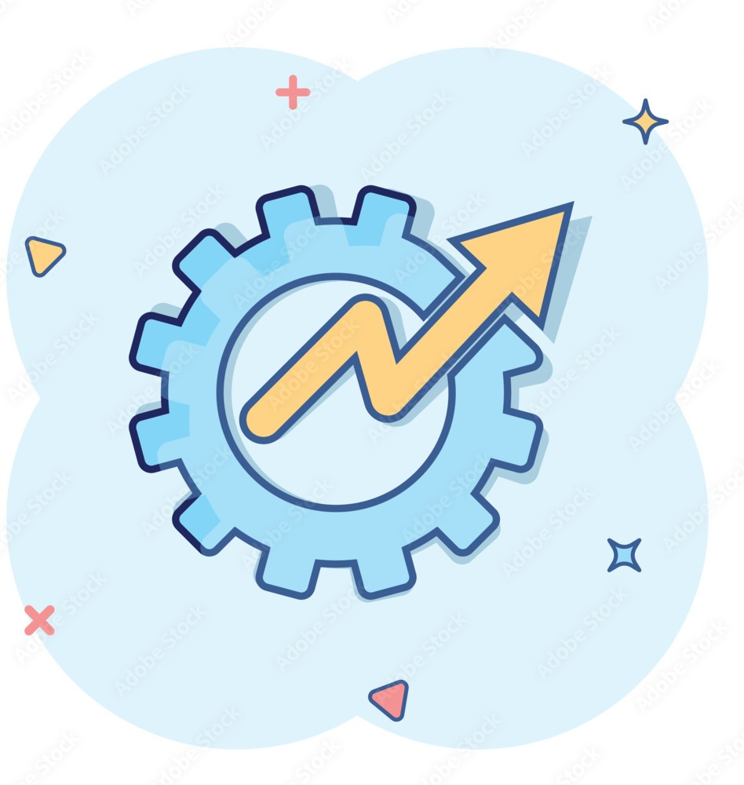
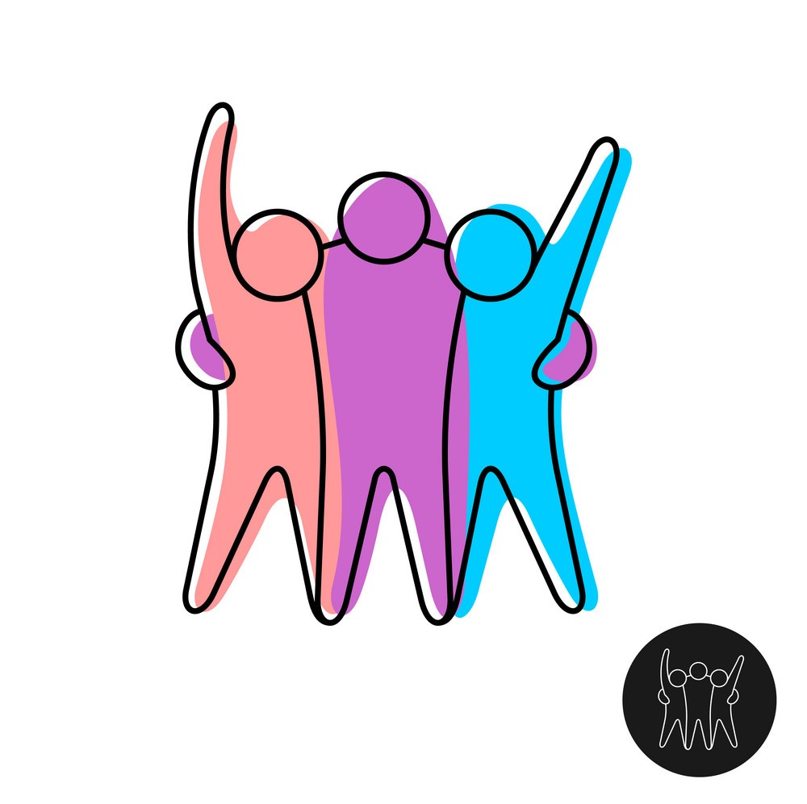

STREAK
Home_Page !
Streak is a productivity app that helps users establish and maintain habits.
It tracks daily activities and encourages consistency by recording streaks of consecutive
completions. Users set personal goals CONTENT_1 and receive reminders to stay on track.
Whether it's exercise, reading, or other routines, Streak CONTENT_2 provides a
visual representation of progress, motivating individuals to build positive habits
CONTENT_3. The app is available on both iOS and Android platforms

